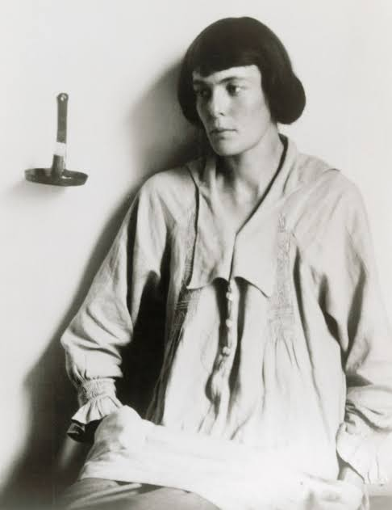
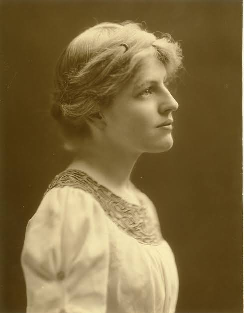
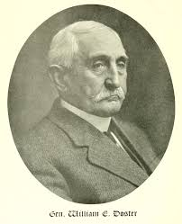
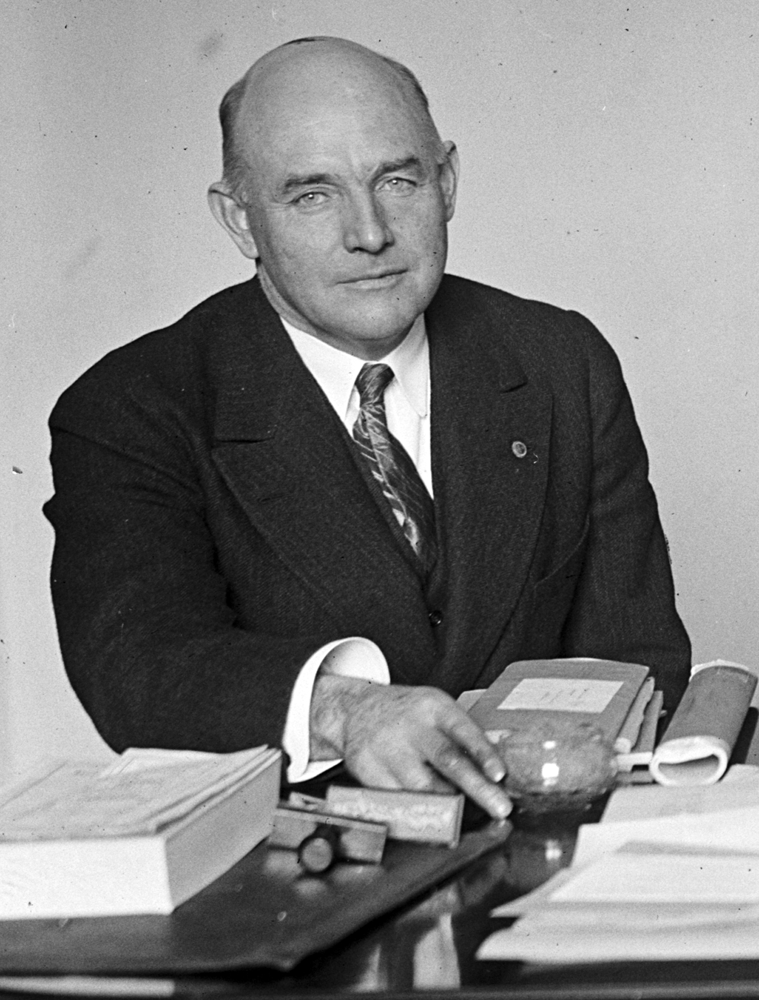

Hilda “H.D.” Doolittle (1886–1961) was an American poet, novelist, and memoirist best known for her role in the Imagist movement, which emphasized clarity, precision, and economy of language. Born in Bethlehem, Pennsylvania, she later moved to London, where she became closely associated with poets like Ezra Pound and Richard Aldington. Her early poetry, including collections like *Sea Garden* (1916), featured vivid, nature-inspired imagery and a minimalist style that helped define Imagism. Beyond poetry, H.D. explored psychological and feminist themes in her later works, drawing from mythology, psychoanalysis, and personal experience. She underwent analysis with Sigmund Freud and incorporated themes of identity, war, and spirituality into works such as *Trilogy* (1944–46) and *Helen in Egypt* (1961). A pioneering modernist and a significant voice in 20th-century literature, H.D.'s work continues to be studied for its innovative style and exploration of gender and selfhood.

Jessie Wilson Sayre (1887–1933) was an American political activist and the daughter of U.S. President Woodrow Wilson. Born in Gainesville, Georgia, she grew up in a politically influential family and was actively involved in social and political causes throughout her life. She graduated from Bryn Mawr College in 1908 and later worked in social reform, particularly advocating for women's rights and progressive political movements. Sayre was deeply engaged in the Democratic Party and played a key role in promoting her father’s policies. She later became involved in the League of Women Voters and worked on various social welfare initiatives. After marrying Francis Bowes Sayre, a diplomat and Harvard law professor, she continued her activism while balancing family life. Her legacy is that of a committed advocate for civic engagement and progressive reforms, particularly in expanding women's political participation in the early 20th century.

William Emile Doster (1837–1919) was an American lawyer and military officer best known for his role as the defense attorney for several Lincoln assassination conspirators. Born in Bethlehem, Pennsylvania, he graduated from Yale University in 1857 and later studied law at Harvard. During the Civil War, Doster served as a Union officer, rising to the rank of lieutenant colonel and leading the 4th Pennsylvania Cavalry. After the war, he gained national recognition when he was appointed to defend Lewis Powell and George Atzerodt, two of the accused conspirators in the assassination of President Abraham Lincoln. Despite the overwhelming evidence against them, Doster argued for leniency based on their mental state and the influence of others, though both were ultimately convicted and executed. Beyond his legal career, Doster was involved in politics and public service, serving as a city solicitor in Bethlehem. He also wrote extensively on law and military history. His legacy is one of a skilled attorney who played a key role in one of the most significant trials in American history.

PLOT: Section C, Lot 11
William Radford Coyle (1879–1962) was an American politician, attorney, and military officer who served as a U.S. Representative from Pennsylvania. Born in Washington, D.C., he later moved to Pennsylvania, where he pursued his education at Lehigh University, graduating in 1900. He then studied law and was admitted to the bar, practicing as an attorney in Pennsylvania. Coyle served in the U.S. Army during World War I, attaining the rank of major. His military service and leadership skills contributed to his later political career. As a member of the Republican Party, he was elected to the U.S. House of Representatives, serving from 1925 to 1927. During his tenure in Congress, he focused on veterans' affairs and economic policies that supported Pennsylvania’s industrial economy. After his time in Congress, Coyle continued practicing law and remained engaged in public service. His legacy is that of a dedicated public servant who balanced military, legal, and political careers while advocating for the interests of his constituents.
